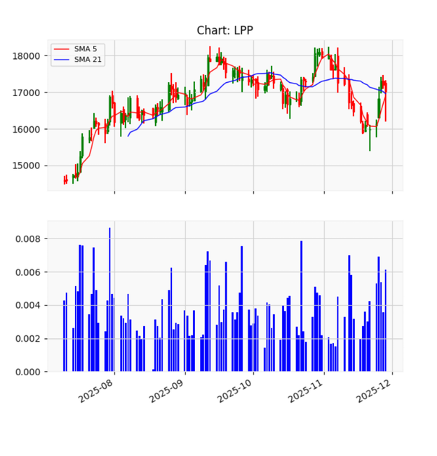

Company Spotlight
📌 LPP
A strong, well-positioned fashion retailer with growing international exposure. However, the company is becoming increasingly dependent on real unit demand rather than price-driven expansion. While operational discipline remains solid, slowing wage growth in Poland may soften discretionary spending momentum, resulting in a more modest revenue trajectory.
📌 Dino
A resilient grocery chain that continues to benefit from necessity-based retail, yet the diminishing inflation boost introduces a more normalized pace of sales growth. Dino’s strategy of expanding into smaller towns and villages may carry higher operational costs, especially in Eastern Poland, where competitors such as Biedronka and Stokrotka maintain stronger market penetration.
📌 CCC
A discretionary footwear retailer exposed to demand volatility and pricing pressure. Leverage remains elevated, but lower inflation and potential interest rate cuts may provide relief on refinancing costs. Still, the broader bearish sentiment around retail could extend downward pressure, especially after the stock’s decline from nearly PLN 240 earlier this year to lows near PLN 130 in December.
Retail Stock Comparison Table
| Company | Business Model | P/E | P/BV | Inflation Sensitivity | Live Chart | Commentary |
|---|---|---|---|---|---|---|
| LPP | Fashion retail omnichannel | ~23.4 | ~4.8 | High |
|
Margins depend on inventory turnover and markdown control. |
| Dino | Value grocery retail | ~27.9 | ~7.2 | Medium |
|
Growth normalizes as inflation tailwind fades. |
| CCC | Footwear retail | ~18.6 | ~1.9 | High |
|
High debt remains a risk, but falling interest rates may materially improve refinancing conditions. |
AI Stock Momentum Signal
Dino — Bearish Probability: 57.37% (Gap: 34.71%)

LPP — Bearish Probability: 54.95% (Gap: 9.43%)
